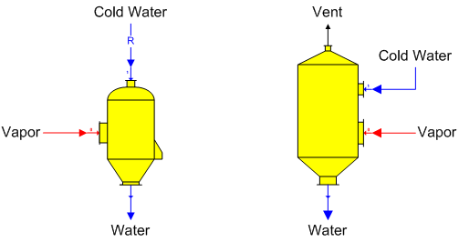

Contact Condenser Contact condenser (direct-contact condenser) stations are used to condense a vapor flow stream using cold water directly injected into the vapor.

General Features The vapor flow goes to input port 0 (zoom in on the contact condenser shape to see the input port numbering), and the cold water flow goes to input port 1 which is made a required flow by Sugars. Vapor is condensed from the cold water flow. The output flow pressure is equal to atmospheric pressure set for the model (see Program Overview > User Interface) and the temperature of the output flow is a result of the heat contents of the vapor and cooling water input flows. No connection is made to the vent if the contact condenser has one - it is simply shown for visual representation of an actual condenser.
Flow components and quantity of the output flow are a result of the vapor and cooling water flows. Also, a contact condenser can be used for pressure feedback when the vapor input flow is a pressure feedback flow and the internal pressure of the contact condenser defines the feedback pressure. The internal pressure is defined on the Contact Condenser Properties window. The output flow solubility coefficients will be a weight-weighted-average of the vapor and cooling water flows if the solubility function coefficients for the cooling water flow are different than the vapor flow (solubility coefficients are only important if either one of the input flows contains any non-sucrose components).